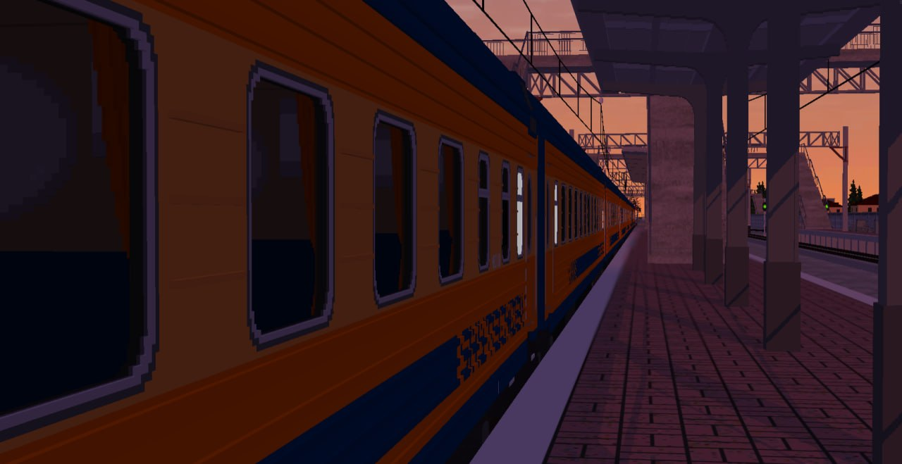
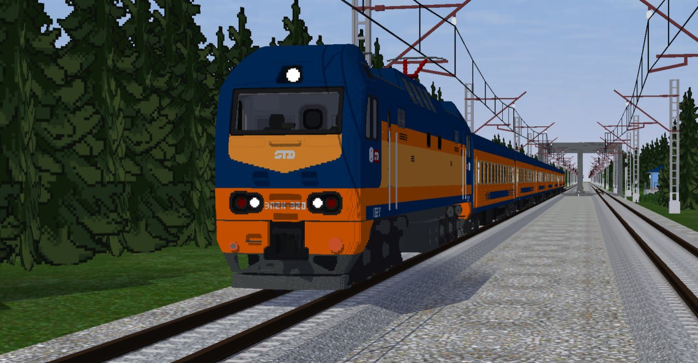
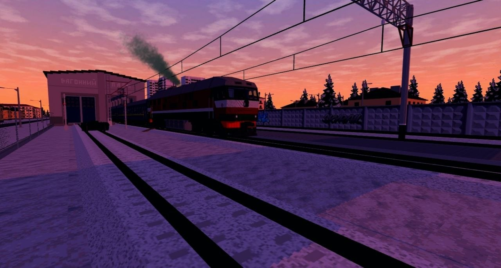
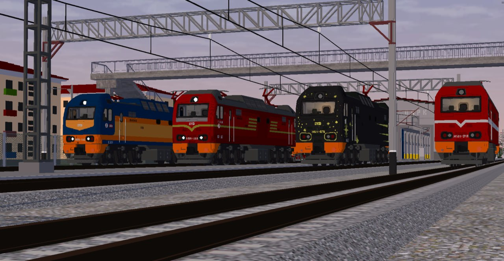
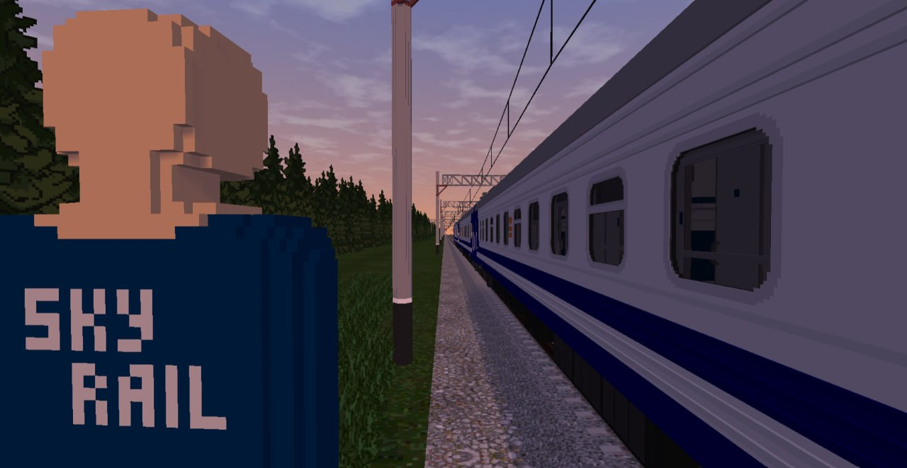
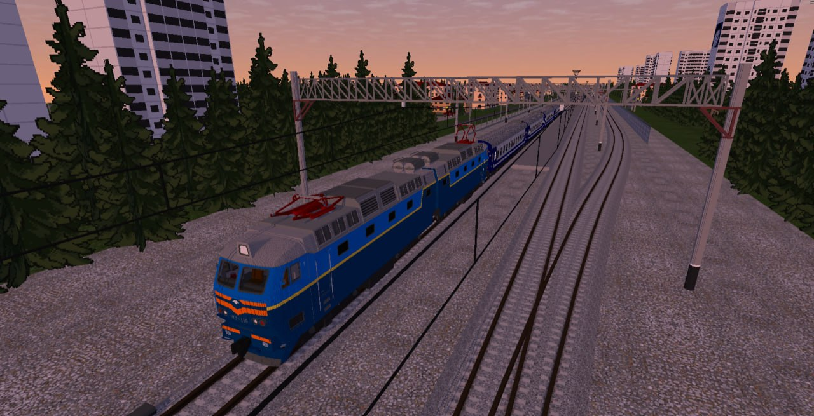
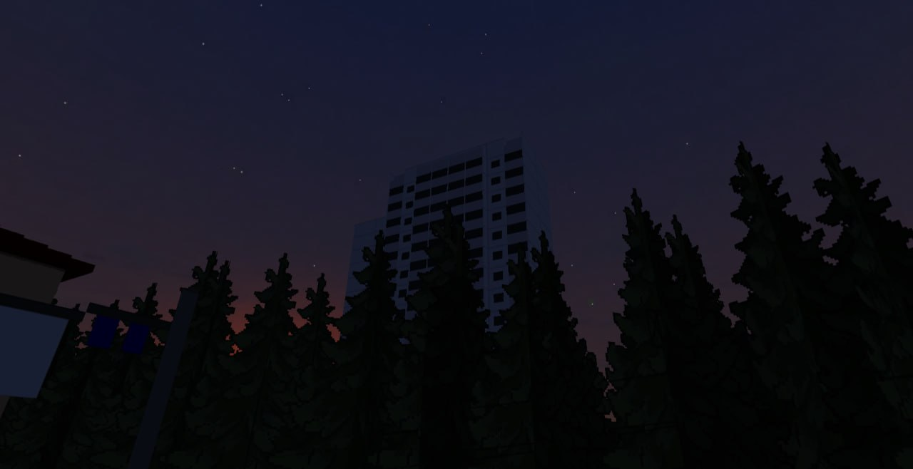
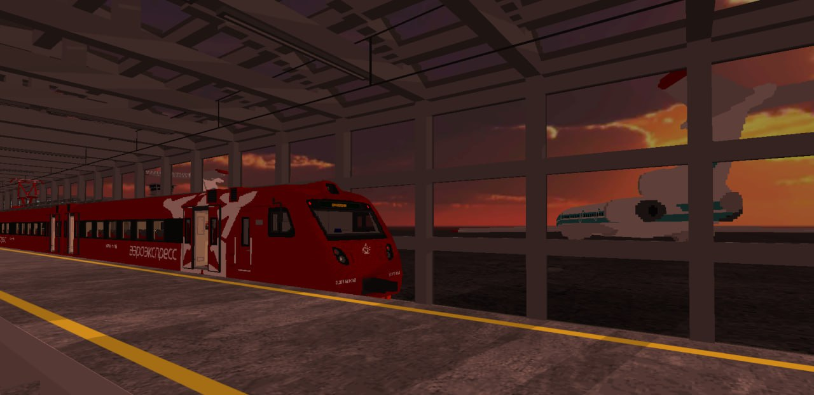
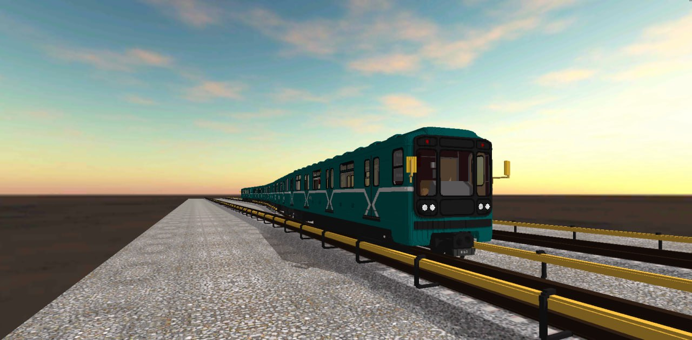
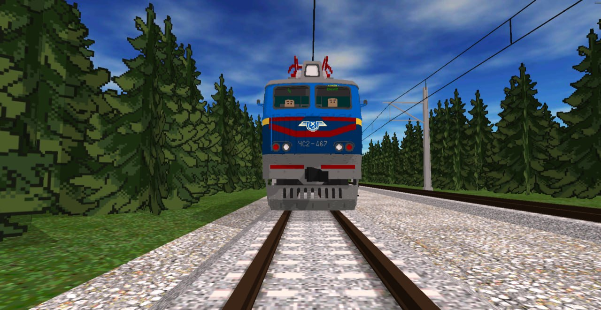

Наш флагманский проект
Добро пожаловать в мир SkyRail. Это наш основной проект, в котором мы объединили собственный опыт разработки с тысячами идей и пожеланий наших игроков. Создавая эту игру, мы внедрили самые свежие и продвинутые механики в жанре железнодорожных симуляторов, чтобы перенести настоящую атмосферу и сложность реальной железной дороги в мобильный формат.
Внимание к деталям — основа нашего подхода. В SkyRail мы реализовали полностью интерактивные кабины, физически корректное поведение многотонных составов и реальные процедуры запуска локомотивов. Вы можете выйти из поезда, перевести стрелки вручную или сформировать состав. И всё это работает с отличной оптимизацией, сохраняя масштаб бесшовного открытого мира.
Готовы отправиться в свой первый рейс? Устанавливайте симулятор и присоединяйтесь к нам.
SkyRail - симулятор поездов
SkyTechDev • Симуляторы










Проект стирает границы привычных мобильных игр, предлагая механики, которые обычно встречаются только на ПК.
Особенности симулятора
Живой мультиплеер
Объединяйтесь с тысячами игроков. Создавайте свои сценарии, работайте машинистом или диспетчером и управляйте движением в реальном времени.
Свобода действий
Полный RolePlay: выходите из кабины локомотива, переводите стрелки вручную, сцепляйте вагоны и исследуйте открытый мир пешком.
Глубокий реализм
Интерактивные кабины, реальные процедуры запуска локомотивов (пантографы, главные выключатели, тормоза) и проработанная физика составов.
За годы непрерывной разработки вокруг игры сформировалось огромное и сплоченное сообщество.
Нам 5 лет. Нас реально много:
Большое спасибо каждому из вас за то, что на протяжении пяти лет были с нами, направляли нас, советовали, помогали, находили уязвимости и верили в нас. Отдельное спасибо действующим работникам железной дороги, которые консультировали нас во время разработки. Каждый из вас действительно ценен.
Развитие студии не останавливается ни на день, и мы приглашаем вас стать частью этого процесса.
Будьте в курсе обновлений
Наш Telegram канал — @skytechdev
Телеграм канал SkyTechDev — основной источник новостей нашей студии, который недавно пробил отметку в 10 тысяч подписчиков.
Здесь люди первыми узнают о предстоящих обновлениях и участвуют в опросах, определяющих векторы развития проектов. Далеко не каждый игрок доходит сюда. Здесь находятся только те, кому действительно интересно наше творчество.
Случайных людей здесь нет. Спасибо, что вы с нами!